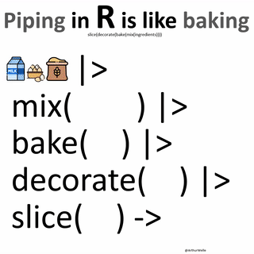

servir(cortar(decorar(assar(mexer(ingredientes)))))
5 ( 4 ( 3 ( 2 ( 1 ( 0 )))))Sobre o que é essa postagem?
- Demonstrar o conceito de tidy data.
- Utilizar o pipe (
%>%e|>).
História
Dado que este blog é dedicado para pessoas em quaiquer nível de aprendizado em R, resolvi fazer uma série de posts explicando funções básicas para a manipulação de dados.
Considero a linguagem R bastante objetiva na sua sintaxe básica, e a forma de estruturação desenvolvida pelo Hadley e equipe, o tidy data, torna a linguagem ainda mais “simples” para que nós, meros mortais, possamos entendê-la.
O tidy data, basicamente, é a padronização dos bancos de dados. Para que seja considerado tidy, o banco de dados obedecer as seguintes regras:
- Cada coluna é uma variável;
- Cada linha é uma observação;
- Cada célula possui somente um valor.
O antônimo de uma tabela tidy, é uma tabela messy (do inglês, bagunçada).
O dia-a-dia de um errezêiro é uma jornada de pegar dados “crus” (raw) e transformá-los em dados limpos e utilizáveis. Nessa jornada, são realizadas transformações de variáveis, filtragens, sumários, etc.
Para uma melhor leitura dos códigos por nós, seres humanes, foi desenvolvido o operador pipe %>%. O pipe desse formato têm sido usado há algum tempo no pacote magrittr, e sua função é unir uma sequência de funções, pegando o resultado anterior, e utilizando na próxima linha.
Desde a versão R 4.1, o R estabeleceu o uso de um pipe próprio, embutido no seu código fonte, é o
|>. Existem algumas diferenças na forma que o R lê ambos, mas isso fica para outro post.
Para ilustrar, utilizarei os passos para fazer um bolo:
- Juntar ingredientes
- Assar;
- Mexer;
- Decorar;
- Cortar;
- Servir.
Na sintaxe do R base, essa seria a forma de utilização:
Ou seja,
- Juntamos os ingredientes;
- Mexemos 0;
- Assamos o resultado de 1;
- Decoramos o resultado de 2;
- Cortamos o resultado de 3;
- Servimos o resultado de 4.
Porém, utilizando o pipe, o código ficaria assim:
O atalho de teclado para o pipe é
CONTROL + SHIFT + M.
ingredientes %>%
mexer() %>%
assar() %>%
decorar() %>%
cortar() %>%
servir()Ou, ilustrando:

Na hora que estamos trabalhando com dados reais, isso faz uma grande diferença.
Mãos no R
Para melhor ilustrar, vamos fazer umas manipulações simples em uns bancos de dados, utilizando 3 métodos diferentes: aninhado, objetos múltiplos e pipes.
O objetivo é:
- Carregar o banco de dados
starwars; - Filtrar por indivíduos com altura maior que 150cm;
- Agrupar por especie e por gênero;
- Sumariar pela média;
- Ordenar do valor maior para o menor.
Utilizarei o banco de dados
starwars, incluído no pacotedados. Saiba mais sobre o pacote e a iniciativa aqui: https://cienciadedatos.github.io/dados/
# para instalar o pacote pelo GitHub:
remotes::install_github("cienciadedatos/dados")# para instalar o pacote pelo CRAN:
install.packages("dados")# para carregar os pacotes:
library(dados)
library(dplyr)
# para carregar o banco de dados `dados_starwars`, e ver um sumário
glimpse(dados_starwars)Rows: 87
Columns: 14
$ nome <chr> "Luke Skywalker", "C-3PO", "R2-D2", "Darth Vader", "Le…
$ altura <int> 172, 167, 96, 202, 150, 178, 165, 97, 183, 182, 188, 1…
$ massa <dbl> 77.0, 75.0, 32.0, 136.0, 49.0, 120.0, 75.0, 32.0, 84.0…
$ cor_do_cabelo <chr> "Loiro", NA, NA, "Nenhum", "Castanho", "Castanho, Cinz…
$ cor_da_pele <chr> "Branca clara", "Ouro", "Branca, Azul", "Branca", "Cla…
$ cor_dos_olhos <chr> "Azul", "Amarelo", "Vermelho", "Amarelo", "Castanho", …
$ ano_nascimento <dbl> 19.0, 112.0, 33.0, 41.9, 19.0, 52.0, 47.0, NA, 24.0, 5…
$ sexo_biologico <chr> "Macho", "Nenhum", "Nenhum", "Macho", "Fêmea", "Macho"…
$ genero <chr> "Masculino", "Masculino", "Masculino", "Masculino", "F…
$ planeta_natal <chr> "Tatooine", "Tatooine", "Naboo", "Tatooine", "Alderaan…
$ especie <chr> "Humano", "Droide", "Droide", "Humano", "Humano", "Hum…
$ filmes <list> <"The Empire Strikes Back", "Revenge of the Sith", "R…
$ veiculos <list> <"Snowspeeder", "Imperial Speeder Bike">, <>, <>, <>,…
$ naves_espaciais <list> <"X-wing", "Imperial shuttle">, <>, <>, "TIE Advanced…Aninhado
arrange(
summarise(
group_by(
filter(dados_starwars, altura > 150),
genero),
media_massa = mean(massa, na.rm = TRUE)),
desc(media_massa))# A tibble: 3 × 2
genero media_massa
<chr> <dbl>
1 Masculino 119.
2 Feminino 55.4
3 <NA> 48 Objetos múltiplos
a <- filter(dados_starwars, altura > 150)
b <- group_by(a, genero)
c <- summarise(b, media_massa = mean(massa, na.rm = TRUE))
d <- arrange(c, desc(media_massa))
d# A tibble: 3 × 2
genero media_massa
<chr> <dbl>
1 Masculino 119.
2 Feminino 55.4
3 <NA> 48 Pipe magrittr
dados_starwars %>%
filter(altura > 150) %>%
group_by(genero) %>%
summarise(media_massa = mean(massa, na.rm = TRUE)) %>%
arrange(desc(media_massa))# A tibble: 3 × 2
genero media_massa
<chr> <dbl>
1 Masculino 119.
2 Feminino 55.4
3 <NA> 48 Pipe R base
dados_starwars |>
filter(altura > 150) |>
group_by(genero) |>
summarise(media_massa = mean(massa, na.rm = TRUE)) |>
arrange(desc(media_massa))# A tibble: 3 × 2
genero media_massa
<chr> <dbl>
1 Masculino 119.
2 Feminino 55.4
3 <NA> 48 Finalizando
Eu sou super fã do pipe magrittr %>%, e estou tentando me acostumar com o pipe built-in do R |>, para melhorar a performance de meus códigos.
As formas aninhadas e de múltiplos objetos utilizei bastante enquanto aprendia a linguagem, mas dificilmente as utilizo hoje em dia.
E então, qual forma de programar em R você prefere?
Até a próxima!
Cheers,